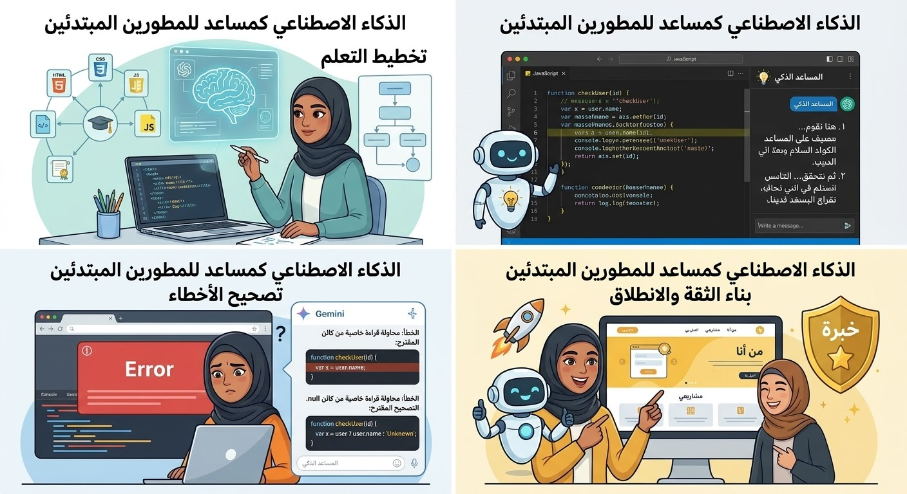

الاسم: احمد سعيد ماهر
سكشن:7
2501882:كود الجامعي
المقدمه
تشهد صناعه التكلونجيا المتطوره في تحويل حل جزري لاغلب مستخدمين ويساعد علي حياتهم اليوميه مثل(gmini chatgpt)لم تعد هذه البرامج انطمه تطبيقات تقنيه متقدمه بل تحولت الي انظم حديثه وسريعه بحيث تساعد جميع المستخدمين علي التعلم وبناء البرامج ومتصفحات بطريقه اسهل وسلسله وتساعد علي الشرح وفهم الاكواد والمنصات مما ادي لسهوله في التعامل وتتعامل مع العقبات الي تواجه المستخدمين الجدد
عرض الموضوع
1-دور الذكاء الصطناعي
يواجه المبددئين الجددمشاكل في لغات البرمجه وكتب الاكواد وصعوبه في فهم الاكواد ف اصبح برامج الذكاء الصطناعي المعلم والمفم الي يتيح لهم سهوله في حل الاكواد ب اكتر من لغه
2-كيف يساعد برامج الذكاء الصطناعي مثل(gmini chatgpt)
شرح الاكواد بطريقه مبسطه وسهله ليستفاد المستخدمين الجدد في حل مشاكل اللكواد
تصيحح الاخطاء واكتشافها في تشغيل الصفحه وكما يمكن للمطور جديد كتابه كود بنفسه برامج اللذكاء الصطناعي
٣-الفوائد والمميزات في الذكاء الصطناعي
توفير الوقت والمجهود
المعلم المتاح لك طول الوقت
تعزيز الثقه بالنفس لدي المطورين
٤-عيوب والقيود لبرامج الذكاء الصطناعي
احتماليه الخطا والهلوسه اثناء كتابه الاكواد
فبتالي مينفعش اللعتماد الرسمي علي مصادر الذكاء الصطناعي
المراجع
(google gmini)
(اجتهاد ذاتي)
(مجالات الويب والتقتنيات)

| id |
name |
phone |
| 2501882 |
ahmed saeid maher |
01276154648 |
- googlegmini
- اجتهاد ذاتي
- مجلات الويب والتقنيات
- googlegmini
- اجتهاد ذاتي
- مجلات الويب والتقتنيات
اضغط هنا